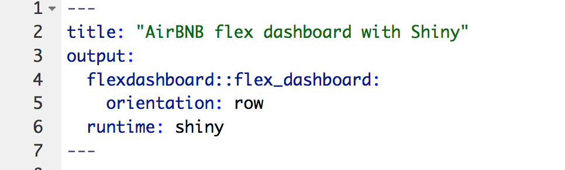
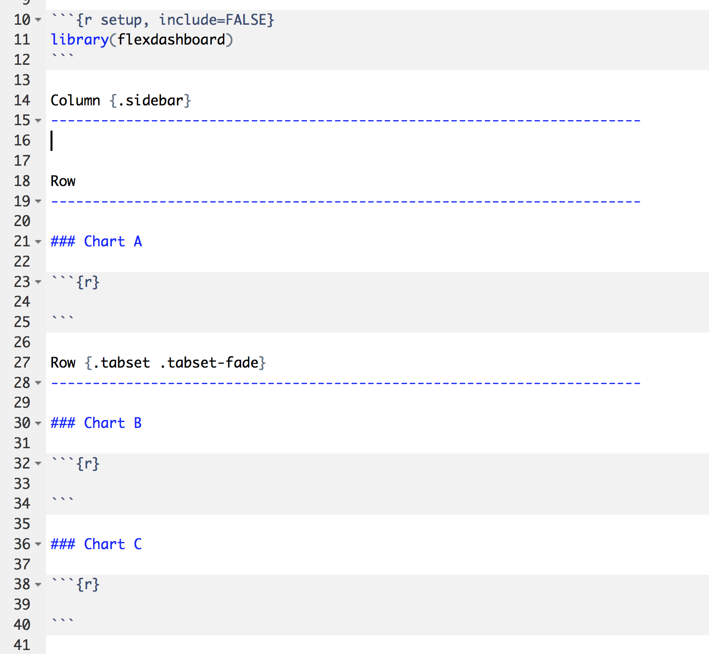

Shiny and flexdashboard
Shiny is RStudio’s framework for creating interactive graphics and web-like applications. There are several ways to use the power of Shiny and we’re going to focus on how to use it in conjunction with flexdashboard to make interactive dashboards within R Markdown.
This is the second module in the Interactivity topic; the relevant slack channel is here.
Example
To gear up for this topic, we’ll create a directory, start an R Project, initialize git, and create a new flexdashboard document.

I’m also going to use a slightly different layout than we used in the last class. Edit the default specifications to match the ones below.

Go ahead and add the following libraries to your dashboard as well.
library(tidyverse)
## Loading tidyverse: ggplot2
## Loading tidyverse: tibble
## Loading tidyverse: tidyr
## Loading tidyverse: readr
## Loading tidyverse: purrr
## Loading tidyverse: dplyr
## Conflicts with tidy packages ----------------------------------------------
## filter(): dplyr, stats
## lag(): dplyr, stats
library(janitor)
library(stringr)
library(forcats)
library(viridis)
## Loading required package: viridisLite
library(plotly)
##
## Attaching package: 'plotly'
## The following object is masked from 'package:ggplot2':
##
## last_plot
## The following object is masked from 'package:stats':
##
## filter
## The following object is masked from 'package:graphics':
##
## layout
library(shiny)Once again we’re going to focus on the Airbnb data for this topic. The goal is to make a dashboard similar to the one from the last lecture but with additional interactive elements. The code below extracts loads and cleans the data, and selects only a few of the variables.
We are going to filter the dataset interactively by taking in user input, and use this dataset as the basis for our plots.
selectInput widget
We will place code for widgets in the sidebar, but this is a choice and they can be placed elsewhere in the dashboard. The selectInput widget creates a drop-down menu with choices for the user to select from.
boros = airbnb_data %>% distinct(boro) %>% pull()
# selectInput widget
selectInput("boro_choice", label = h3("Select boro"),
choices = boros, selected = "Manhattan")
Now we can select each of the different boros in New York. But how do we use this to update our dataset or plot?
renderPrint({
input$boro_choice
})We see that the user-select boro is stored as a string ‘under the hood’.
sliderInput widget
What would the renderPrint return if we wanted the user to select a numeric value Let’s add another widget and find out.
max_price = 1000
min_price = airbnb_data %>% distinct(price) %>% min()
# sliderInput widget
sliderInput("price_range", label = h3("Choose price range"), min = min_price,
max = max_price, value = c(100, 400))Interactive scatterplot
We start with the same plot_ly scatter plot we used in the last class. The only difference is now we will wrap it in a renderPlotly call. Go ahead and replace the renderText with the code below in your flexdashboard.
renderPlotly({
airbnb_data %>%
mutate(text_label = str_c("Price: $", price, '\nRating: ', rating)) %>%
plot_ly(x = ~longitude, y = ~latitude, type = "scatter", mode = "markers",
alpha = 0.5,
color = ~price,
text = ~text_label)
})
The plot shows up, but in order to get it to change along with user input options from the sidebar, we need to add some Shiny input$ calls.
Interactive barchart
Similarly, we’ll take the boxplot code from last lecture, add it to our dashboard, and edit the code so it incorporates user input.
airbnb_data %>%
count(neighbourhood) %>%
mutate(neighbourhood = fct_reorder(neighbourhood, n)) %>%
plot_ly(x = ~neighbourhood, y = ~n, color = ~neighbourhood, type = "bar")
## Warning in RColorBrewer::brewer.pal(N, "Set2"): n too large, allowed maximum for palette Set2 is 8
## Returning the palette you asked for with that many colorsNotice that neighborhoods change with choice of boro.
Interactive boxplot
Lastly, we’ll make the boxplot from last lecture and add in the Shiny user input elements. I’ve provided the code below.
renderPlotly({
common_neighborhoods =
airbnb_data %>%
filter(boro == input$boro_choice,
price %in% input$price_range[1]:input$price_range[2],
room_type == input$room_choice) %>%
count(neighbourhood, sort = TRUE) %>%
top_n(8) %>%
select(neighbourhood)
airbnb_data %>%
filter(boro == input$boro_choice,
price %in% input$price_range[1]:input$price_range[2],
room_type == input$room_choice) %>%
inner_join(., common_neighborhoods, by = "neighbourhood") %>%
plot_ly(y = ~price, color = ~neighbourhood, type = "box",
colors = "Set2")
})Now you have a flexdashboard with Shiny elements!
Hosting Shiny documents
You can’t email Shiny-based HTML files like you can a static HTML file generated by R Markdown. This is because Shiny-based documents need to run R locally. However, you can host them through Shinyapps.io. A slightly fancier version of the Shiny-based flexdashboard for this class is hosted here.
Shiny apps
So far we’ve focused on adding Shiny to flexdashboard. We refer to our completed dashboard as a Shiny document. However, there other ways to use Shiny! The most common way is to make a Shiny application, or app. So you know how these work, we’re going to make a super simple one and deploy it. If you are interested in making a more complicated Shiny app, I’ve included some resources below.
Shiny apps use .R files, rather than .Rmd. You can initialize a Shiny app right from R Studio! Let’s do that now.

Make sure to set a new directory for your app. Let’s put an R project in there too, and open up that R project. In order to deploy the app, you can either open the file, and click the RunApp button, or run the following line of code in your console:
shiny::runApp("../my_app")Other materials
- For more on using flexdashboards with Shiny, here’s a tutorial
- There are also several examples of people making these types flexdashboards, many which incorporate Shiny
- Hosting your shiny app or document online through shinyapps.io.
- For more on making Shiny apps, check out R Studio’s tutorial, or this one